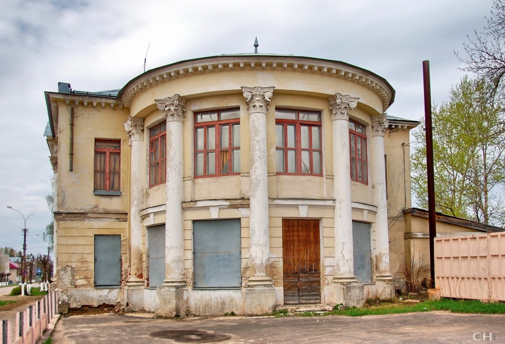

Дома фабрикантов Голубевых
В истории Судогды семья Голубевых сыграла немаловажную роль. Неизвестен источник первоначального капитала, но в середине XIX века семья Льва Голубева перебирается из села Кондряева в уездный город. Евграф Львович и Козьма Львович сначала построили жилые дома, а затем три каменных, где велась бойкая торговля под управлением внуков. Вскоре Евграф устроит льнопрядильную мануфактуру, которая за несколько десятилетий станет большой фабрикой. Капиталы позволили организовать стекольный завод в Судогде (ныне градообразующее предприятие «Красный Химик»). К 1917 году Голубевы скупили 7 аналогичных предприятий. Козьма Львович Голубев был городским головой.
Первый из построенных домов является украшением центральной улицы. Деревянное одноэтажное здание с резными наличниками и башенкой напоминает расписной терем. Сейчас здесь находится отделение скорой помощи.
Адрес: г. Судогда, ул.Ленина, д. 49.

Деревянный дом фабрикантов Голубевых. Современный вид.
Двухэтажный дом Петра Козьмича Голубева появился в 1916 году. Памятник архитектуры выполнен в неоклассическом стиле. Колонны и ротонда были необычным решением для провинциального города. К сожалению, обжить дом хозяева не успели. В настоящее время здание находится в запущенном состоянии.
Адрес: г. Судогда, ул.Ленина, д. 46.

Каменный дом фабрикантов Голубевых. Современный вид.